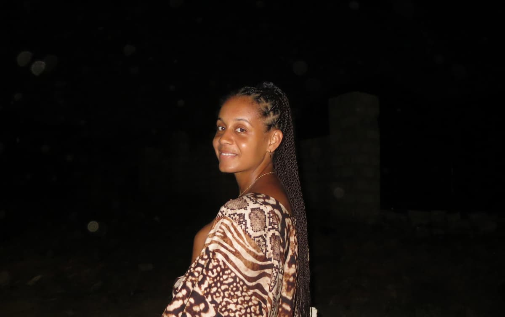

Sankofa on ghanalaisesta akan-kulttuurista peräisin oleva sanonta, joka tarkoittaa ”palaa takaisin ja hae se”. Twi-kielestä juontuva käsite muistuttaa meitä siitä, että paremman tulevaisuuden rakentamiseksi on katsottava menneisyyteen. Sankofa kutsuu meitä tarkastelemaan historiaamme, ymmärtämään identiteettejämme ja kunnioittamaan perintöämme – tunnustaen, että menneisyyden viisaus voi ohjata meitä eteenpäin. Sankofa ry:ssä tämä periaate on kaiken toimintamme ytimessä.
Uskomme lapsiin ja nuoriin
Näemme lapset samalla tavalla kuin Malidoma Patrice Somé heidät kuvaili: kypsinä sieluina, jotka saapuvat fyysisiin kehoihin tuoden mukanaan oman viisautensa, potentiaalinsa ja lahjansa. Somé kuvasi osuvasti, mitä tapahtuu, jos yhteisö ei ota lapsiaan vastaan eikä vaali heitä: laiminlyödyt nuoret saattavat ”polttaa kylän maan tasalle vain tunteakseen hieman lämpöä”. Tämä voimakas ajatus kertoo ihmisen perustavanlaatuisesta tarpeesta tulla rakastetuksi, kuulua joukkoon ja kokea yhteyttä – sekä siitä, mitä seuraa, kun lapsi kasvaa ilman näitä asioita.
Me jaamme tämän näkemyksen. Uskomme, että jokainen lapsi ja nuori ansaitsee tulla toivotetuksi tervetulleeksi ja kohdatuksi huolenpidolla. Heille on annettava tilaa löytää itsensä ja ilmaista, keitä he todella ovat. Taiteen, kulttuurin ja yhteisöllisyyden keinoin pyrimme luomaan ympäristöjä, joissa nuoret kokevat yhteenkuuluvuutta, tunnistavat omat vahvuutensa ja tietävät olevansa tärkeitä.

Lisää Ama Kyein kuva
AMA KYEI
Ama Kyei on tanssija, koreografi ja tanssipedagogi,
jonka sydän sykkii vapauden ja yhteenkuuluvuuden
hetkille tanssin parissa. Tanssin lisäksi Ama
rakastaa lapsia, luontoa ja eloisia värejä.
Yhteisöllisyys on hänelle tärkeää, ja hän näkee
näyttämöteoksensa tilaisuuksina kokoontua yhteen.
Kyein tanssilliset juuret ovat katutanssissa.
Viime vuosina hän on tutustunut länsiafrikkalaisiin
tanssiperinteisiin Ghanassa, Senegalissa ja Beninissä.